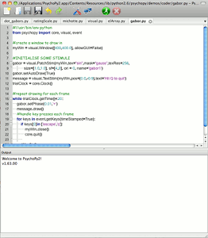

|
|
|
|
|
A few screenshots are provided here to give you a flavour, but it’s easier to download the software and run the demos (from the demos menus in each view) to see the variety of stimuli that can be generated.
PsychoPy is one of very few packages that allows a choice of interface. Use the Coder view, for those that like to program (or just use your own editor)
and the Builder view for those that don’t:
PsychoPy can handle every type of stimulus you can imagine...
Images and movies of most formats:

Random dots and element arrays, drawn in realtime:
Many text options and dialog boxes:
For more ideas about PsychoPy’s massive range of stimuli, install it, go to the Coder view and run some of the demo scripts (there’s a whole demos menu).